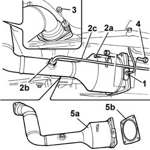

1080G10 CATALYTIC CONVERTER - R.R.
- Path
- Procedures > 10 ENGINE > 1080 EXHAUST EMISSION CONTROL SYSTEM > 1080G F.A.P. EMISSION CONTROL SYSTEM > 1080G10 CATALYTIC CONVERTER - R.R.
- Kind
- repair procedure (removal / refitting; the operation number is the code)
- Applies to
- engines: 2.2 16V JTD; all production periods
- Interactive page
- https://sloeber94.github.io/elrnDB-fUlss/en/#/179007129
Applies to: engines: 2.2 16V JTD; all production periods
 Removing
Removing
 Refitting
RefittingOp. 7055B54 UNDER-ENGINE GUARD - R R
1. Undo the nut and move the sensor away from the work area.
2. Undo the fixing bolt (2a) and the connector (2a) and partly remove the rigid pipe (2c).
3. Undo the bolts fixing the catalytic converter to the exhaust manifold flange.
4. Undo the bolts fixing the catalytic converter to the particle filter.
5. Remove the catalytic converter (5a) and metal gasket (5b).

Applies to: engines: 2.2 16V JTD; all production periods
Refitting
Removing- Place the catalytic converter and gasket in position.
- Tighten the bolts to the particle filter and to the exhaust manifold, then tighten to the recommended torque.
Value daNm | Fastening | Component | Ø | |
|---|---|---|---|---|
- | 4.5±0.7 | Nut | Front flange | - |
Value daNm | Fastening | Component | Ø | |
|---|---|---|---|---|
- | 3.3±0.5 | Bolt | Catalytic converter/particle filter fastening | - |
- Fit the rigid pipe in position and tighten the fixing bolts.
- Tighten the sensor in place and tighten to the recommended torque.
Value daNm | Fastening | Component | Ø | |
|---|---|---|---|---|
- | 1.7±0.1 | Connector | Pressure connector | - |